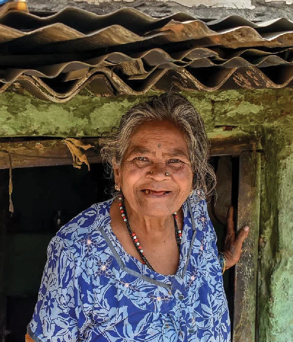

The World Health Day is being celebrated on April 7, the day the World Health Organisation (WHO) was formed in 1948. The WHO is focusing on "global attention on urgent actions needed to keep humans and the planet healthy and foster a movement to create societies focused on well-being." Aptly, the theme for 2022 is 'Our Planet, Our Health'.
--- Read More

Divyanshi, Rajasthan
A mother's heart is tied to her child's. There is no doctor in our village. The nearest clinic is 5km away and we have to walk all that way. Two weeks ago, my daughter started crying continuously. I didn't know what to do. My husband was out for work. Me and my mother in law tried our best to soothe her, but she won't settle down. Then my mother in law said today is the day that the health van will come. The van started coming to our village once every 15 days, with doctors and free medicines. When I brought him to the medical van, the doctor told me she has diarrhoea. He gave me proper treatment guidelines and packets of ORS solution which helped to calm her. The moment she started smiling again, I was finally relieved!